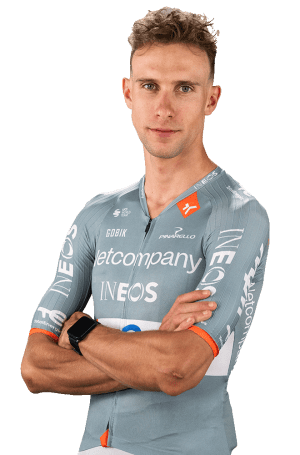

Axel Laurance
Datos Personales
- Axel Laurance
- 13/04/2001
- Francia
- NETCOMPANY INEOS CYCLING TEAM/gbr
- 64

Datos equipos
- B'Twin U19 AG2r La Mondiale
- Van Rysel - AG2R La Mondiale
- VC Pays de Loudéac
- Pinarello Q36.5 Pro Cycling Team
- Alpecin-Deceuninck Development Team
- Alpecin - Deceuninck
- INEOS Grenadiers
Temporada 2025
| Datos | Resultado |
|---|---|
| Carreras | 17 |
| Victorias | 0 |
| Victorias de etapa | 0 |
| Pódiums | 1 |
| Mejor puesto | 2º |
| Peor puesto | 25º |
Multimedia
Equipo https://www.lavuelta.es/es/equipo/NCI/netcompany-ineos-cycling-team en la Vuelta Ciclista a España 2026